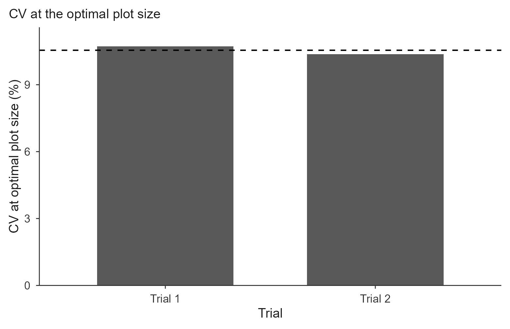

paranaiba.Rmd
library(trialSize)The other three methods start from a table of CVs, one per planned plot size, and fit a model to it. The Paranaíba method skips that step entirely: it works on the raw grid of basic experimental units and returns the optimal plot size in closed form, with no model fitting at all.
The insight is that the whole CV-versus-size curve is driven by how much neighbouring units resemble one another. If adjacent units are strongly correlated, grouping them buys little new information and the optimal plot stays small; if they are independent, larger plots keep paying off. That similarity is summarized by the first-order spatial autocorrelation , and the optimum follows directly:
where and are the mean and variance of the BEU values and is the autocorrelation between adjacent units.
Reading the formula gives the intuition directly: enters only through , so is largest when (independent units) and shrinks as approaches 1 (strong spatial dependence, in either direction).
The grid is walked in serpentine order, left to right along the first row, right to left along the second, and so on, turning the two-dimensional grid into a single sequence in which consecutive entries are physically adjacent. With the deviations from the mean along that path,
The original method walks in the direction of the
rows, which is the default here
(rho_direction = "row"). "col" walks down the
columns and "mean" averages both. The choice matters: the
two directions can give visibly different
,
and therefore different optima, especially when the field has a gradient
along one axis.
Original method: Paranaíba, P. F., Ferreira, D. F. & Morais, A. R. (2009). Tamanho ótimo de parcelas experimentais: proposição de métodos de estimação. Revista Brasileira de Biometria, 27(2), 255-268.
The formulas are validated against published results in the package
tests; see Cargnelutti Filho, A. et al. (2014). Tamanho de parcela e
número de repetições em aveia preta. Ciência Rural, 44(10),
1732-1739, where calc_paranaiba() reproduces the published
and
for all nine black-oat trials of the first evaluation date.
The example uses the bundled simulated uniformity trial
(?uniformity_trial): 8 × 12 grids of 1 m² BEU, each holding
a biomass-like measurement in g m⁻².
grid_mat <- function(t)
unname(as.matrix(uniformity_trial[uniformity_trial$trial == t,
grep("^col", names(uniformity_trial))]))
E1 <- grid_mat("T1")
E2 <- grid_mat("T2")
dim(E1)
#> [1] 8 12The matrix must preserve the field layout. Rows and columns are not interchangeable here: because is directional, a transposed grid gives a different answer.
fit <- calc_paranaiba(E1)
#> Paranaiba method on 1 trial(s); rho direction = 'row'.
fit
#> Paranaiba optimal plot size
#> Trials: 1 | rho direction: row | invalid: 0
#>
#> trial mean variance CV rho_row rho_col rho Xo CVxo valid
#> Trial 1 251.013 3471.819 23.474 0.017 0.091 0.017 4.794 10.72 TRUEBoth directional estimates are always reported (rho_row
and rho_col), even though only the one selected by
rho_direction is used in rho and feeds the
formulas. Seeing both is useful: a large gap between them signals a
directional gradient in the field.
summary(fit)
#> Optimal plot size (Xo) across trials:
#> Min. 1st Qu. Median Mean 3rd Qu. Max.
#> 4.794 4.794 4.794 4.794 4.794 4.794
#>
#> CV at optimal plot size (CVxo):
#> Min. 1st Qu. Median Mean 3rd Qu. Max.
#> 10.72 10.72 10.72 10.72 10.72 10.72The full per-trial table is in $summary, and the grids
as supplied are kept in $matrices:
fit$summary[, c("mean", "variance", "CV", "rho", "Xo", "CVxo")]
#> mean variance CV rho Xo CVxo
#> 1 251.0129 3471.819 23.47375 0.01655932 4.793933 10.71956
do.call(rbind, lapply(c("row", "col", "mean"), function(d) {
f <- calc_paranaiba(E1, rho_direction = d)
data.frame(direction = d, rho = f$summary$rho,
Xo = f$summary$Xo, CVxo = f$summary$CVxo)
}))
#> Paranaiba method on 1 trial(s); rho direction = 'row'.
#> Paranaiba method on 1 trial(s); rho direction = 'col'.
#> Paranaiba method on 1 trial(s); rho direction = 'mean'.
#> direction rho Xo CVxo
#> 1 row 0.01655932 4.793933 10.71956
#> 2 col 0.09052249 4.781240 10.69118
#> 3 mean 0.05354090 4.789785 10.71029Here both directional estimates are small, so the choice of direction barely moves : is flat near the origin. In a field with a strong directional gradient the two would differ more and the choice would matter.
Unless you are deliberately reproducing a study that did otherwise,
keep the default "row", which is the original method.
One matrix, as above, for a single trial.
A list of matrices, for several trials. Names become the trial labels:
res <- calc_paranaiba(list(`Trial 1` = E1, `Trial 2` = E2))
#> Paranaiba method on 2 trial(s); rho direction = 'row'.
res
#> Paranaiba optimal plot size
#> Trials: 2 | rho direction: row | invalid: 0
#>
#> trial mean variance CV rho_row rho_col rho Xo CVxo valid
#> Trial 1 251.013 3471.819 23.474 0.017 0.091 0.017 4.794 10.720 TRUE
#> Trial 2 256.167 3346.830 22.584 0.146 0.103 0.146 4.639 10.373 TRUE
#>
#> Mean Xo: 4.72 | Mean CVxo: 10.55A long data frame, with the measurement column plus row and column indices. The grid is rebuilt from the indices, not from the row order of the file, which is much safer when data come out of a spreadsheet:
long <- expand.grid(col = 1:12, row = 1:8)
long$mf <- as.vector(t(E1))
calc_paranaiba(long, value = "mf", row_id = "row", col_id = "col")$summary$Xo
#> Paranaiba method on 1 trial(s); rho direction = 'row'.
#> [1] 4.793933With a trial column, one estimate is produced per
trial:
long2 <- rbind(
transform(long, trial = "Trial 1"),
transform(expand.grid(col = 1:12, row = 1:8), mf = as.vector(t(E2)),
trial = "Trial 2")
)
calc_paranaiba(long2, value = "mf", row_id = "row", col_id = "col",
trial = "trial")$summary[, c("trial", "rho", "Xo", "CVxo")]
#> Paranaiba method on 2 trial(s); rho direction = 'row'.
#> trial rho Xo CVxo
#> 1 Trial 1 0.01655932 4.793933 10.71956
#> 2 Trial 2 0.14621177 4.638860 10.37281Missing cells are an error rather than a silent gap, and
n_row / n_col can be passed to assert the
expected grid dimensions.
plot(res, title = "Paranaiba: optimal plot size")The dashed line is the mean across trials. Use
y_var = "CVxo" to show the CV at the optimum instead:
plot(res, y_var = "CVxo", title = "CV at the optimal plot size")
plot(res, title = "Paranaiba",
save = TRUE, file = "paranaiba.tiff", format = "tiff", dpi = 300)A trial with zero variance (every unit identical) or a zero mean
cannot produce an estimate:
is undefined and the formulas divide by the mean. Those trials get
valid = FALSE and NA results, with a warning
naming the trial, rather than propagating NaN quietly into
a summary table.
The Paranaíba estimate uses information the CV-based methods discard, namely where each unit sits in the field, and it needs no model fitting or convergence. The trade-off is that it needs the raw grid, which the CV-based methods do not.
If you have the raw grid, running both is worthwhile: agreement between a spatial estimate and a CV-curve estimate is reassuring, and disagreement usually points at a directional gradient worth investigating before designing the experiment.
See vignette("lrp"), vignette("qrp") and
vignette("mcm") for the CV-based methods, and
vignette("replicates") for turning
into a number of replications.